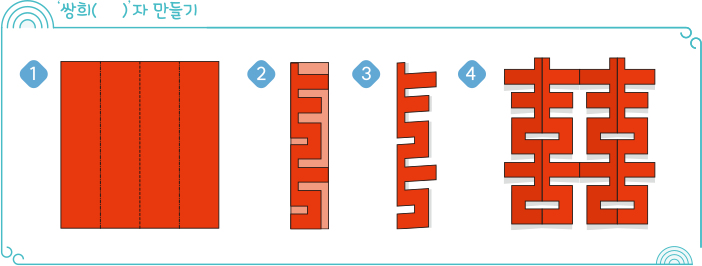
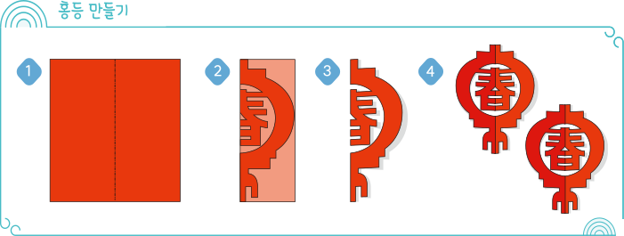

剪纸(jiânzhî)는 종이를 오려 다양한
모양을 만드는 중국의 전통 종이
공예입니다.
붉은색 종이를 많이 사용하며, 명절이나 기념일에 집 안팎을
剪纸로
장식합니다.

囍
剪纸(jiânzhî)는 종이를 오려 다양한
모양을 만드는 중국의 전통 종이
공예입니다.
붉은색 종이를 많이 사용하며, 명절이나 기념일에 집 안팎을
剪纸로
장식합니다.

보충
젠즈(剪纸)
6세기 말부터 유래된 중국의 전통 민간 공예로, 가위나 칼을
이용하여 한 장의 종이를 끊어짐 없이 연결하여 오리는 종이
공예이다. 복을 기원하는 의미를 담고 있으며, 명절이나
결혼식 등 경사스러운 날에 젠즈로 장식하여 축하한다. 글자,
인물, 동물, 곤충, 꽃 등의 도안으로 만든
剪纸(jiânzhî)로
창문이나 거울, 벽 등을 장식한다.
설명
春(chñn)
春(chñn)이라는 한자는 ‘봄’을 뜻하는
春天(chñntiãn)을 나타내는 말로, 중국인은
‘봄볕이 내리쬐면 만물이
번영한다’ 는 의미가 있다고 생각하여
‘春(chñn)’ 자를 젠즈의 소재로 많이 사용한다. 또한 봄은 1년의 첫 번째
계절이라고 생각하여 새로움과 시작을 상징한다.
설명
쌍희(双喜shuãngxî,囍xî)
중국의 전통 장식 디자인 글자로 결혼식,
환갑, 칠순,
팔순
등의 잔치에 장식하여 기쁨을 나타낸다. 동시에 두 가지 기쁜
일이 있다는 의미이며,‘기쁠 희(喜)’ 두 글자를 붙이고
획을 합치고 일부 변형하여 도안으로 다양하게 활용한다.
북송의 정치가이자 문학가인 왕안석(王安石 Wáng
Ânshí)이 결혼식 당일 과거에 합격한 소식을 접하게 되었다. 결혼과
합격 두 가지 경사가 동시에 겹친(喜上加喜 xî shàng jiã
xî) 것을 기뻐한 왕안석은 붉은 종이 위에
‘희(喜 xî)’ 두 글자를
겹친 ‘쌍희(囍
xî)’를 써서 대문에 붙인 것에서
쌍희자가 유래되었다.